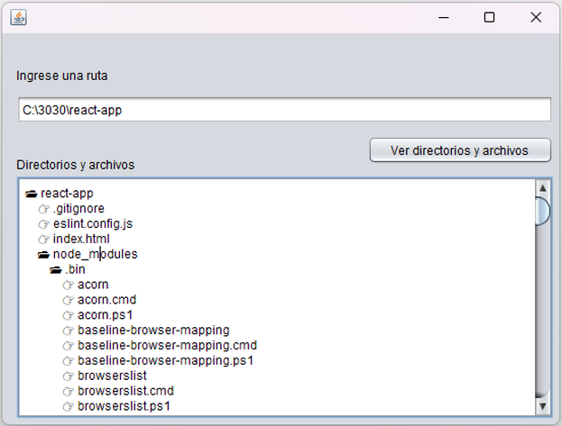

Listar directorios · Estructuras jerárquicas · Búsqueda recursiva
La recursividad es una técnica de programación donde un método se llama a sí mismo para resolver un problema dividiéndolo en subproblemas más pequeños.
📌 Estructura básica: Caso base (detiene la recursión) + Caso recursivo (llamada a sí mismo).

public void listarArchivos(File carpeta, String indent) {
if (carpeta.isDirectory()) {
txtArea.append(indent + "📁 " + carpeta.getName() + "\n");
File[] archivos = carpeta.listFiles();
if (archivos != null) {
for (File archivo : archivos) {
listarArchivos(archivo, indent + " ");
}
}
} else {
txtArea.append(indent + "📄 " + carpeta.getName() + "\n");
}
}
private void jButton1ActionPerformed(java.awt.event.ActionEvent evt) {
JFileChooser chooser = new JFileChooser();
chooser.setFileSelectionMode(JFileChooser.DIRECTORIES_ONLY);
int opcion = chooser.showOpenDialog(this);
if(opcion == JFileChooser.APPROVE_OPTION){
File carpeta = chooser.getSelectedFile();
txtRuta.setText(carpeta.getAbsolutePath());
}
txtArea.setText("");
String ruta = txtRuta.getText();
File directorio = new File(ruta);
listarArchivos(directorio, "");
}
Problema: En una empresa existe una estructura jerárquica de empleados. Cada empleado puede tener varios subordinados.
Objetivos:
public class Empleado {
private String nombre;
private List<Empleado> subordinados;
public Empleado(String nombre) {
this.nombre = nombre;
this.subordinados = new ArrayList<>();
}
public void agregarSubordinado(Empleado e) {
subordinados.add(e);
}
public String getNombre() { return nombre; }
public List<Empleado> getSubordinados() { return subordinados; }
}
public static void mostrarEmpleados(Empleado empleado, String espacio) {
System.out.println(espacio + "👤 " + empleado.getNombre());
for (Empleado sub : empleado.getSubordinados()) {
mostrarEmpleados(sub, espacio + " ");
}
}
Crear un programa que permita seleccionar una carpeta, recorra todas las subcarpetas y cuente cuántos archivos y carpetas hay en total.
Permitir seleccionar una carpeta, escribir el nombre del archivo y buscarlo recursivamente en todas las subcarpetas, mostrando dónde se encontró.
Seleccionar una carpeta, recorrer todas las subcarpetas y mostrar solo archivos de imagen (extensiones: .jpg, .png).
Desarrollar una aplicación que permita seleccionar una carpeta, buscar recursivamente archivos de imagen y mostrar una vista previa de cada imagen encontrada.
Desarrollar una aplicación en Java con JFrame que permita mostrar la estructura jerárquica de empleados de la empresa utilizando recursividad.
Modificar el ejercicio anterior para permitir subir una imagen para cada empleado usando JFileChooser y mostrar la imagen escalada en un JLabel.
// Subir imagen
JFileChooser chooser = new JFileChooser();
int opcion = chooser.showOpenDialog(this);
if(opcion == JFileChooser.APPROVE_OPTION){
File archivo = chooser.getSelectedFile();
String ruta = archivo.getAbsolutePath();
txtFoto.setText(ruta);
// Ajustar imagen al tamaño del JLabel
ImageIcon icon = new ImageIcon(ruta);
java.awt.Image img = icon.getImage().getScaledInstance(
lblFoto.getWidth(), lblFoto.getHeight(),
java.awt.Image.SCALE_SMOOTH);
lblFoto.setIcon(new ImageIcon(img));
}
| No. | Criterio de Evaluación / Funcionalidad a Probar | Peso | Ganado |
|---|---|---|---|
| 1 | Implementación de interfaz gráfica con JFrame / JForm | 5% | — |
| 2 | Selección de carpeta con JFileChooser (DIRECTORIES_ONLY) | 5% | — |
| 3 | Función recursiva para listar archivos y carpetas | 10% | — |
| 4 | Mostrar estructura jerárquica con indentación en JTextArea | 10% | — |
| 5 | Ejercicio 1: Contar archivos y carpetas recursivamente | 10% | — |
| 6 | Ejercicio 2: Buscar archivo por nombre en subcarpetas | 10% | — |
| 7 | Ejercicio 3: Filtrar archivos de imagen (.jpg, .png) | 10% | — |
| 8 | Ejercicio 4: Vista previa de imágenes encontradas | 10% | — |
| 9 | Ejercicio 5: Clase Empleado con estructura jerárquica | 10% | — |
| 10 | Ejercicio 5: Método recursivo para mostrar empleados | 10% | — |
| 11 | Ejercicio 6: Subir imagen por empleado con JFileChooser | 5% | — |
| 12 | Ejercicio 6: Escalar y mostrar imagen en JLabel | 5% | — |
| TOTAL | 100% | — | |